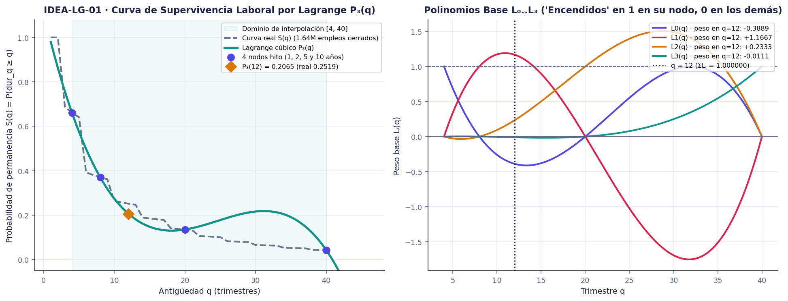

Supervivencia Laboral S(q)
y Fenómeno de Runge Empírico
JobPath (MineriaProtect): trayectorias laborales de JobHop v2 enriquecidas con el catálogo europeo ESCO v1.2.1 (3,039 oficios). Aquí reconstruimos la permanencia laboral sobre 1,643,772 empleos cerrados (~es_vigente) de data/03_processed/ desde 4 hitos y comprobamos cómo Chebyshev-Lobatto reduce 19.4× el Fenómeno de Runge con 0 violaciones en [0, 1].
~es_vigente (MR-09)E∞: 2.53 → 0.130 (grado 16)4.44e-16 (MR-03)De 4 hitos ejecutivos a la curva continua... sin que la varilla explote
Los 4 hitos conocidos de permanencia laboral
De 1,643,772 empleos finalizados (03_processed, ~es_vigente) conocemos 4 puntos exactos:
- 1 año (
q = 4trim.): sigue en el cargo el66.09 %(0.660880). - 2 años (
q = 8trim.): sigue el37.05 %(0.370539). - 5 años (
q = 20trim.): sigue el13.58 %(0.135783). - 10 años (
q = 40trim.): sigue el4.30 %(0.042983).
Mapa de capas data/ en este caso: usa directamente 03_processed/empleos_unificado_limpio.csv (Versión A filtrada a ~es_vigente). Las capas 01_raw/, 02_interim/ y 04_transformed/ no se leen directamente en IDEA-LG-01.
💡 Analogía cotidiana: la varilla elástica en la pared
Una varilla flexible pasa suavemente por 4 clavos. Pero si clavas 17 clavos a igual distancia en una curva muy empinada, la varilla da latigazos gigantes cerca de los bordes (Fenómeno de Runge: predice −248 %!).
Las 2 soluciones: (1) concentrar clavos en las esquinas (nodos de Chebyshev-Lobatto) o (2) usar trocitos cortos de varilla de a 3 puntos (Lagrange local por tramos P₂).
∑ Fórmulas de Lagrange explicadas símbolo por símbolo (+ ejemplo en q = 12)
. avanza
4 trimestres = 1 año; q = 12 es 3 años).n = 3).i (4, 8, 20, 40) y su probabilidad real exacta S(qᵢ).(q − qⱼ) lo apaga en otros nodos; denominador (qᵢ − qⱼ) lo normaliza a 1 en qᵢ (exige qᵢ ≠ qⱼ, regla MR-04).Lᵢ(qᵢ) = 1, Lᵢ(qⱼ) = 0 (err 0.0). Partición de la unidad: ∑Lᵢ(q) = 1 (err 4.44e-16).q (verificada frente a scipy.interpolate.lagrange, diff 5.05e-15).Ejemplo aritmético en 3 años (q = 12): L₀ = −0.3889, L₁ = +1.1667, L₂ = +0.2333, L₃ = −0.0111 → ∑Lᵢ = 1.0000 ✔ → P₃(12) = 20.65 % vs. real 25.19 % (error 0.0455).
∑ Fórmulas de Chebyshev-Lobatto, E∞ y RMSE símbolo por símbolo
. avanza
Nodos de Chebyshev-Lobatto (2.ª especie)
a = 1 y b = 40 trimestres.20.5 trimestres.19.5 trimestres.q=1 y q=40 (0 violaciones).Métricas de error sobre [1, 40]
[1, 40] (detecta explosiones de Runge).m = 40 trimestres.MR-04 los deduplica a 15 nodos*.Mueve q y observa Kronecker, ∑Lᵢ = 1 y la explosión en q = 48
Trimestre a consultar q ∈ [2, 48]
Curva P₃(q) vs. S(q) real y pesos base L₀..L₃ en vivo
Polinomio cúbico en 4 hitos y prueba empírica del Fenómeno de Runge

P₃(q) sobre los 4 hitos ejecutivos y descomposición exacta de los pesos base L₀..L₃.
−248 % (E∞ = 2.5262) frente a Chebyshev-Lobatto (0.1301, 19.4× mejor).Equiespaciado vs. Chebyshev-Lobatto vs. Local por Tramos P₂
| Grado (n) | Estrategia de Nodos | Error Máx. (E∞) | RMSE | Mín. / Máx. pred. | Violaciones [0,1] |
|---|---|---|---|---|---|
| 3 (4 nodos) | Lagrange Equiespaciado | 0.1717 | 0.0513 | 0.0430 / 1.00 | 0 |
| 8 (9 nodos) | Lagrange Equiespaciado | 0.2204 | 0.0548 | 0.0430 / 1.00 | 0 |
| 8 (9 nodos) | Chebyshev-Lobatto | 0.2091 | 0.0473 | 0.0327 / 1.00 | 0 |
| 12 (13 nodos) | Lagrange Equiespaciado | 0.2615 | 0.0650 | máx 1.2256 | 1 |
| 12 (13 nodos) | Chebyshev-Lobatto | 0.1476 | 0.0328 | 0.0430 / 1.00 | 0 |
| 12 (13 nodos) | Local Cuadrático P₂ | 0.1196 | 0.0317 | 0.0430 / 1.00 | 0 |
| 16 (17 nodos) | Lagrange Equiespaciado | 2.5262 (Runge!) | 0.5120 | −2.4827 (−248 %) | 2 graves |
| 16 (15 nodos*) | Chebyshev-Lobatto | 0.1301 (19.4× mejor) | 0.0327 | 0.0430 / 1.00 | 0 |
| 16 (17 nodos) | Local Cuadrático P₂ | 0.1843 | 0.0441 | 0.0430 / 1.00 | 0 |
* Nota obligatoria sobre 15 nodos* y métricas: al redondear los 17 nodos coseno de Chebyshev-Lobatto a trimestres enteros en [1, 40], 2 pares cercanos a los bordes coinciden y se deduplican (regla MR-04 de nodos distintos), quedando 15 nodos únicos (grado efectivo 14). E∞ = peor error absoluto puntual en [1, 40]; RMSE = error cuadrático medio.
Cuidados obligatorios y glosario completo
Cuidados obligatorios
- Excluir empleos activos (
MR-09): solo1.64 Mempleos cerrados (~es_vigente). - No extrapolar polinomios (
MR-05): enq = 48(12 años),P₃cae a−59.84 %(imposible). - No-monotonicidad y apilamiento anual:
P₃(16) = 13.84 % < P₃(28) = 20.58 %, yS(q)cae en escalones cada 4 trimestres. En producción preferirP₂local o PCHIP (interpolación cúbica monótona).
Glosario Rápido (cero siglas sueltas)
- Supervivencia
S(q): probabilidad de que un empleo cerrado (~es_vigente,MR-09) dure al menosqtrimestres. - Delta de Kronecker / Partición (
MR-03):Lᵢ(qᵢ)=1,Lᵢ(qⱼ)=0y∑Lᵢ(q)=1. - Fenómeno de Runge: latigazos en bordes al subir el grado con nodos equiespaciados.
- Chebyshev-Lobatto /
MR-04: nodos coseno anclados en[1, 40], deduplicados para impedir división por cero. - Apilamiento anual (heaping): escalones en
S(q)cada 4 trimestres por fechas redondeadas a años exactos. E∞/RMSE/PCHIP/MR-05: error máximo absoluto, error cuadrático medio, interpolación cúbica monótona y bandera de extrapolación.